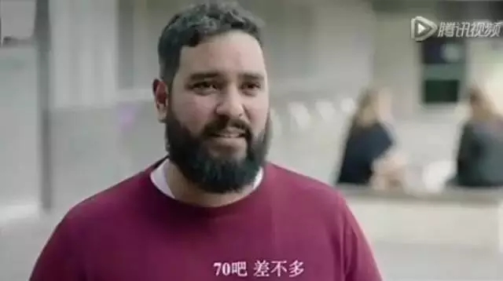
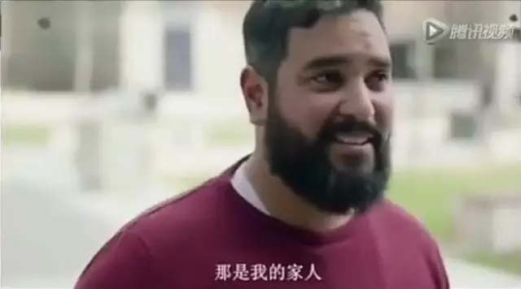
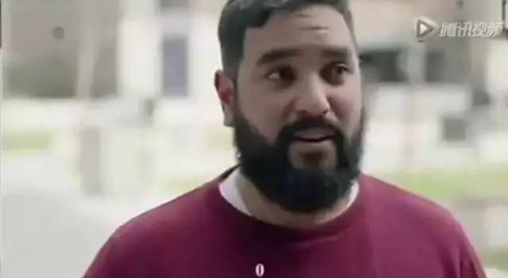
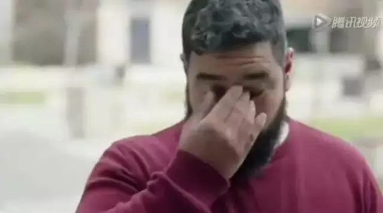

互惠动态
|
|
我不是针对谁，这样带孩子的父母都是失职！
刷微博看到一条新闻：
近日在海南澄迈一商场内，由于大人一时疏忽，一3岁男童独自走到电梯口玩耍，不慎将手腕卡在扶梯保护装置。所幸经救援男童脱险，只是擦伤和淤血。家长正在向商场方面追责，双方正在协调中。
不记得这是今年看到的第几条这样的新闻。
因为家长的疏忽，孩子掉入酒店游泳池发生意外，然后向酒店方面追责；
因为家长的疏忽，给孩子玩电吹风，结果电吹风起火孩子烧伤，家长向厂家追责；
因为家长的疏忽，放任孩子在马路上疯跑，结果被汽车剐蹭，家长向司机追责；
因为家长的疏忽，孩子挑逗博物馆刚出生的小奶猫，被母猫抓伤，家长向博物馆追责。
我个人是认同投诉和追责的做法的，从产品的设计到规则的制定，只有不断的去弥补缺陷和追求完善，才能推动这个社会的进步。
但是更想说的一点是，有些意外是本可以避免的，比追责更重要的事情其实是自省。父母的安全意识，决定了孩子的安全状况，这一点，千万不要等出现意外了才明白。
带孩子远离危险
是给孩子最大的保险
记得有一次看到一对母女过马路，女儿坚持要等红绿灯，母亲说：在中国你就要学会中国式过马路，你看这不是没车吗？女儿不同意，死死拉着妈妈的手不让过，这时候车流已经比较密集了，母亲嫌弃的看着女儿：你看你个死倔的样子……
想起了香港专栏作家屈颖妍在《怪兽家长》中写过的一个故事：一个香港人去日本，发现他们即使在深更半夜行人稀少的情况下，日本人也会乖乖地等红绿灯。香港人问，这是为什么呢？一个日本人答：那盏灯，就是法律—我们不是怯于法律，我们只是尊重那盏灯。
有时候听到一些人说，日本孩子比中国孩子要好在什么什么地方，我总是会为中国的孩子鸣不平。我们明明有世界上最好的孩子啊，我们的问题在于教育，而教育的问题在于理念，在于社会的大环境，在于学校和老师，更在于孩子的家长。
常常在游乐场看到与工作人员争执不休的家长，有些项目规定禁止低于1.2米的儿童游玩，一些家长觉得既然买了套票又不玩吃亏了，所以反反复复的跟工作人员说，“我孩子有1米2，你们的尺子不准”“哎呀，就差一点没有关系的，孩子早就想玩这个了”“买票的时候你们可没说这个不能玩的，这不是骗人吗，要么给我们玩，要么退票！”……
常常在一些景区看到给孩子“花式拍照”的家长。明明写了禁止攀爬，有些家长还是会抱起孩子或鼓励孩子们爬到那些雕塑上去。明明写了禁止倚靠，有些家长还是会带孩子在这样的栏杆上折腾不停……
常常在一些水边纵容孩子戏水打闹的家长。有些是观赏类的喷泉是禁止入内的，但还是会有家长把孩子放进去戏水纳凉。有些湖边江边是不让下水的，还是会有家长跟孩子说“我们去捞小鱼小虾吧”，“我们来玩泼水的游戏吧”……
我不是针对谁，这样带孩子的父母都是失职。
不知道大家还记不记得前几日因为在野生动物园下车，而被猛虎攻击，造成一死一重伤的游客。规则就是规则，规则的作用就好像空中走廊的栏杆，抓紧这个栏杆，你是享受一览众山小的惊喜还是漫步云端的快感都可以。越过这个栏杆，一旦出了问题，哪里都没有后悔药可以吃。
生命只有一次，不管你给孩子买了多大数额的保险，都只是事后的补偿。只有教会孩子遵守规则，敬畏规则，带孩子远离危险，才是一份最大的保险。
父母才是孩子
最大的保护伞
教会孩子遵守规则只是一方面，孩子毕竟是孩子，他的认知能力和风险意识都有限。所以更需要父母的有力保护。然而我们也常常能看到另外一种失职。
有一次搭乘朋友的顺风车，他的妻子抱着3岁的孩子坐在副驾驶的位置。我连忙劝阻，这样太危险了，应该在后座给孩子安装一个儿童座椅啊。朋友笑了笑：“你信不过我车技？”，他的妻子也说：“本来想买的，但看电视上说，儿童座椅也有很多质量不好的，还占地方。这么多孩子没有那东西不也没事儿”。
朋友家里并不缺钱，车也是花了40余万元购置的名车，每年光是保养和维护的钱，购置大品牌的儿童座椅绰绰有余。但是他所缺乏的，正是儿童安全意识。
就如知乎上一位网友说的：技术好不代表一定不会有事故，自己的技术好不代表别人不会撞你。北京长安街的车祸，触目惊心。而受害人，是停在那里等红灯的！长安街英菲尼迪车祸案，这起车祸中的孩子，是从车窗里飞出去的！
我还见过因为某些情况要外出，就把孩子独自反锁在家中的父母；还有自己拿水果刀削苹果，然后直接切成小块，用刀子插着苹果喂进孩子口中的父母；还有因为各种理由，在大夏天把孩子独自留在车内的父母；还有在高速公路上停车休息，上车就把孩子忘在路上的父母……
不是我运气不好，遇见的父母都不重视儿童安全，而是这种现象太为普遍，普遍到留心观察，即可发现。
带孩子本是细致活
没人能对万一负责
可能有些朋友会觉得说父母失职是小题大做。是啊，带孩子是太累人太精细的工作。没有人能保证不出错，也没有父母会故意害自己的孩子。偶尔出现一些疏忽也应该理解。毕竟出现意外的概率那么小，毕竟很多父母都这样带孩子，也没出什么事儿啊。
可是有句话叫做“不怕一万，就怕万一”，有一组非常恐怖的数字，根据世界卫生组织的报告，中国每年有超过1万名儿童因交通意外死亡，并且每年因各类意外死亡的14岁以下儿童的数字为：20万。
20万是一个太庞大太恐怖的数字。那么这个数字是多少，才会是可以接受的呢？10万？5万？1万？你希望的数字是？
澳大利亚有一个公益宣传短片，记者也问了被采访者类似的问题。他告知被采访者，去年他们州的车祸死亡人数是249人，你能接受的数字是多少？
被采访者想了一下，说：70

随后，记者请出了70个人，告诉被采访者，70人大概就是这么多。
而被采访者震惊了，因为走出来的这70个人，全部都是他的家人和朋友

当记者再次询问，他所能接受的数字是多少，被采访者重复了两遍：0，然后开始哭泣。


人人都会被牵挂，每个孩子都是父亲母亲的小宝贝。孩子成长的道路上，会遇到很多困难，受到很多伤害。但是父母能做的就是，尽可能的让她远离危险，成为孩子最大的保护伞。我们都不能对“万一”负责，但是，我们还是要全力以赴的，为孩子负责。

关于互惠，您了解得够多么？
请外国学生来家庭照顾孩子，辅导孩子外语？
只了解这些是不够的！
获取更多信息请参考以下方式：
联系ASC：
电话：86-21-61116069(上海中心）
86-25-66065662（南京中心）
全国家庭均可申请！
手机：15601666586（可加微信）
Q Q：3259637585
微信：asc-center
邮箱：info@asc-center.com
网站：www.asc-aupair.com

感谢您对我们的关注